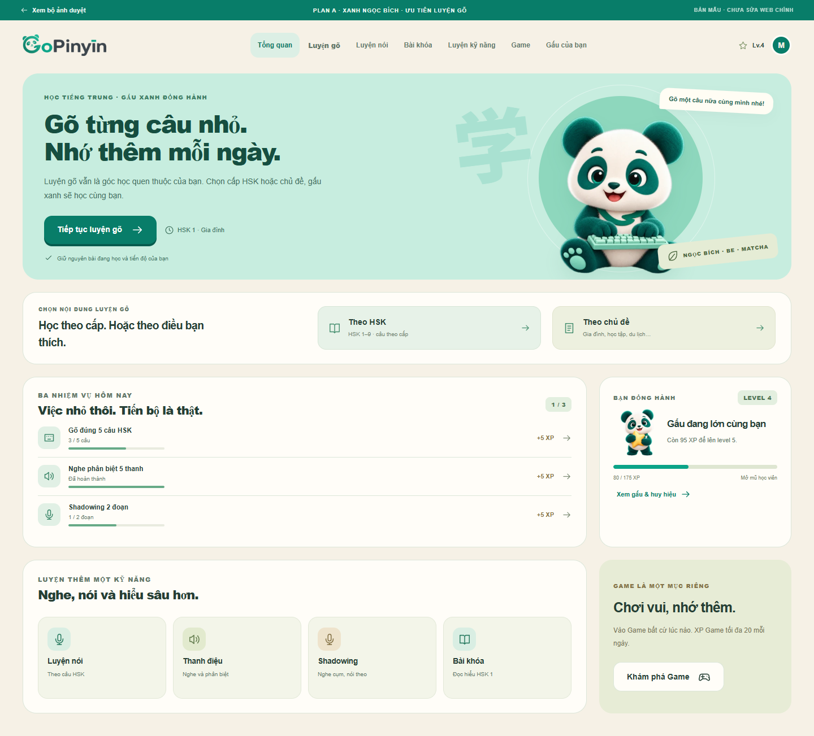
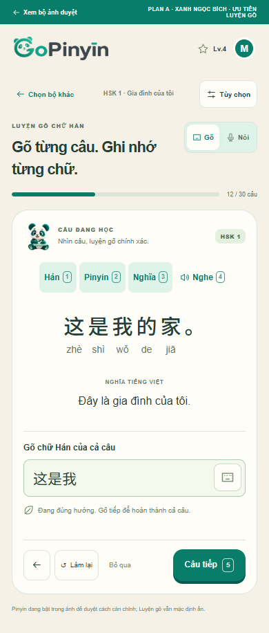
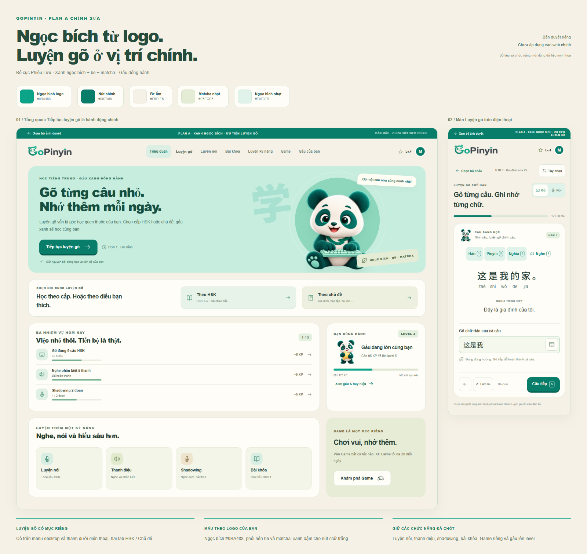
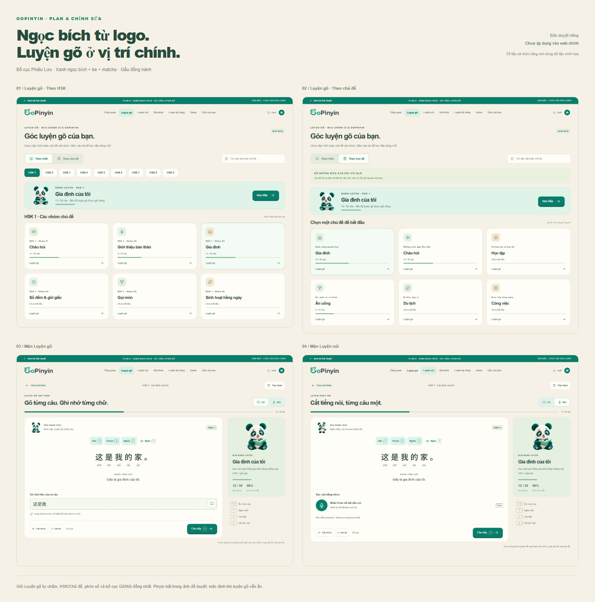

<!doctype html><html lang="vi"><head><meta charset="utf-8"><meta name="viewport" content="width=device-width,initial-scale=1"><title>GoPinyin — duyệt màu ngọc bích và Luyện gõ</title><link href="https://fonts.googleapis.com/css2?family=Be+Vietnam+Pro:wght@400;500;600;700;800&family=Manrope:wght@400;500;600;700;800&display=swap" rel="stylesheet"><link rel="stylesheet" href="review.css"></head><body><div id="root"></div><script>
const palette=[['#0BA488','Ngọc bích logo'],['#087D69','Nút chính'],['#F6F1E6','Be ấm'],['#E5ECD5','Matcha nhạt'],['#E0F3EB','Ngọc bích nhạt']];
const screens=[['dashboard-desktop','Tổng quan · ưu tiên Luyện gõ'],['typing-hsk-desktop','Luyện gõ · Theo HSK'],['typing-topics-desktop','Luyện gõ · Theo chủ đề'],['typing-study-desktop','Màn Luyện gõ'],['pron-desktop','Màn Luyện nói'],['tone-desktop','Học thanh điệu'],['shadow-desktop','Shadowing'],['lesson-desktop','Bài khóa HSK 1'],['games-desktop','Game riêng'],['bear-desktop','Gấu · level và huy hiệu'],['dashboard-mobile','Tổng quan điện thoại'],['typing-hsk-mobile','Danh mục gõ điện thoại'],['typing-study-mobile','Luyện gõ điện thoại'],['options-mobile','Tùy chọn trong màn hình']];
const sheet=new URLSearchParams(location.search).get('sheet');
function swatches(){return '<div class="swatches">'+palette.map(([c,n])=>`<div><i style="background:${c}"></i><span><b>${n}</b><small>${c}</small></span></div>`).join('')+'</div>';}
const heading=`<header class="sheet-head"><div><span class="eyebrow">GOPINYIN · PLAN A CHỈNH SỬA</span><h1>Ngọc bích từ logo.<br>Luyện gõ ở vị trí chính.</h1><p>Bố cục Phiêu Lưu · Xanh ngọc bích + be + matcha · Gấu đồng hành</p></div><aside>Bản duyệt riêng<br><b>Chưa áp dụng vào web chính</b><small>Số liệu và chức năng mới dùng dữ liệu minh họa</small></aside></header>`;
if(sheet){document.body.className='export';document.getElementById('root').innerHTML=sheet==='typing'?`<section class="sheet typing-sheet">${heading}<div class="four-images">${screens.slice(1,5).map(([f,n],i)=>`<div><h2>0${i+1} / ${n}</h2></div>`).join('')}</div><footer>Giữ Luyện gõ tự chấm, HSK/Chủ đề, phím số và bố cục Gõ/Nói đồng nhất. Pinyin bật trong ảnh để duyệt; mặc định khi luyện gõ vẫn ẩn.</footer></section>`:`<section class="sheet">${heading}${swatches()}<div class="hero-images"><div><h2>01 / Tổng quan: Tiếp tục luyện gõ là hành động chính</h2></div><div><h2>02 / Màn Luyện gõ trên điện thoại</h2></div></div><div class="changes"><div><b>LUYỆN GÕ CÓ MỤC RIÊNG</b><p>Có trên menu desktop và thanh dưới điện thoại; hai tab HSK / Chủ đề.</p></div><div><b>MÀU THEO LOGO CỦA BẠN</b><p>Ngọc bích #0BA488, phối nền be và matcha; xanh đậm cho nút chữ trắng.</p></div><div><b>GIỮ CÁC CHỨC NĂNG ĐÃ CHỐT</b><p>Luyện nói, thanh điệu, shadowing, bài khóa, Game riêng và gấu lên level.</p></div></div></section>`;}
else{document.getElementById('root').innerHTML=`<header class="intro"><span class="eyebrow">PLAN A · BẢN DUYỆT MỚI</span><h1>Gõ từng câu nhỏ.<br>Nhớ thêm mỗi ngày.</h1><p>Màu ngọc bích lấy từ logo, phối be và matcha. Luyện gõ trở lại thành mục chính, chia HSK / Chủ đề; giữ toàn bộ hướng chức năng đã chốt.</p><div class="notice">Ảnh dựng từ prototype riêng. Chưa thay đổi web chính, API, tài khoản hoặc tiến độ của bạn.</div>${swatches()}<nav><a href="index.html">Thử Tổng quan</a><a href="index.html?page=typing">Thử danh mục Luyện gõ</a><a href="index.html?page=typing-study">Thử màn Luyện gõ</a></nav></header><main><section class="overview"><h2>Bảng duyệt tổng quan</h2><a href="overview-board.png"></a></section><section class="overview"><h2>Bảng duyệt HSK / Chủ đề và hai màn Gõ / Nói</h2><a href="typing-board.png"></a></section><h2 class="detail-heading">Mở từng ảnh để xem chữ và nút ở kích thước đầy đủ</h2><div class="grid">${screens.map(([f,n])=>`<a href="${f}.png"><span>${n}</span></a>`).join('')}</div></main><footer class="end">14 ảnh chi tiết · Bản mẫu minh họa · Gấu và logo giữ nguyên nhận diện.</footer>`;}
</script></body></html>
